Cookbook
Short recipes for things people ask of a geometry package: a goal, the call that does it, and its result. Each block defines what it needs, so you can copy one without reading the ones before it. The recipes point to the page that explains the function in depth.
using ApolloniusWorking with points and segments
The midpoint, or a point a fraction of the way along
A, B = APPoint(1.0, 2.0), APPoint(7.0, 5.0)
s = APSegment(A, B)
midpoint(s), point_on_line(s, 0.25)([4.0, 3.5], [2.5, 2.75])
point_on_line(s, t) takes a fraction of the way from the first end to the second. It works on a line, a segment or a ray, and t can leave [0, 1] to go past the ends.
A point at a given distance and direction
polar_point(4.0, pi / 3), polar_point_deg(4.0, 60.0), polar_point_deg(4.0, 60.0, APPoint(1.0, 1.0))([2.0000000000000004, 3.4641016151377544], [2.0000000000000004, 3.4641016151377544], [3.0000000000000004, 4.464101615137754])
Divide a segment in the golden ratio, or find a harmonic conjugate
A, B = APPoint(0.0, 0.0), APPoint(10.0, 0.0)
golden_ratio_point(A, B), harmonic_conjugate(A, B, APPoint(2.0, 0.0))([6.180339887498948, 0.0], [-3.333333333333334, 0.0])
The distance from a point to a segment, a line or a polygon
p = APPoint(5.0, 4.0)
distance(p, APSegment(APPoint(0.0, 0.0), APPoint(3.0, 0.0))), distance(p, APLine(APPoint(0.0, 0.0), APPoint(1.0, 0.0)))(4.47213595499958, 4.0)
See Measurements & Queries for what distance means for each type.
Working with lines
The perpendicular from a point, and its foot
l = APLine(APPoint(0.0, 0.0), APPoint(4.0, 1.0))
p = APPoint(3.0, 4.0)
perp = perpendicular_through(l, p)
projection(p, l), is_perpendicular(perp, l)([3.764705882352941, 0.9411764705882353], true)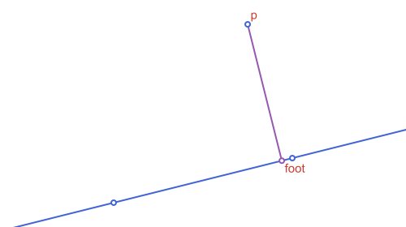
The parallel through a point, and a line shifted sideways
l = APLine(APPoint(0.0, 0.0), APPoint(4.0, 1.0))
par = parallel_through(l, APPoint(0.0, 3.0))
is_parallel(par, l), offset_line(l, 2.0)(true, APLine([-0.48507125007266594, 1.9402850002906638] -> [3.514928749927334, 2.9402850002906638]))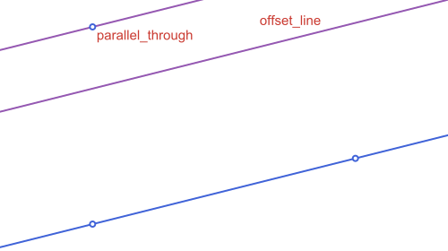
The perpendicular bisector of a segment
A, B = APPoint(0.0, 0.0), APPoint(6.0, 2.0)
m = perpendicular_bisector(A, B)
distance(A, m) ≈ distance(B, m), on_line(midpoint(A, B), m)(true, true)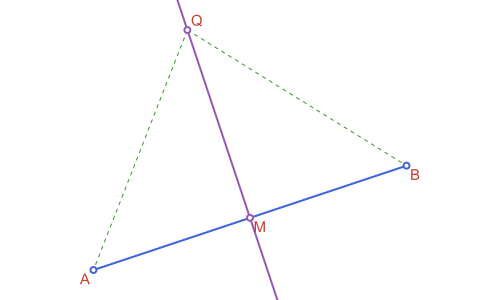
Reflect a point in a line
l = APLine(APPoint(0.0, 0.0), APPoint(1.0, 1.0))
reflection(APPoint(3.0, 0.0), l)[0.0, 3.0]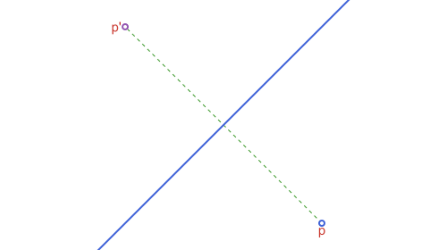
Where two lines meet, or whether they do
l1 = APLine(APPoint(0.0, 0.0), APPoint(4.0, 2.0))
l2 = APLine(APPoint(0.0, 3.0), APPoint(4.0, 1.0))
intersection(l1, l2), intersection(l1, offset_line(l1, 1.0))(APPoint{2, Float64}[[3.0, 1.5]], APPoint{2, Float64}[])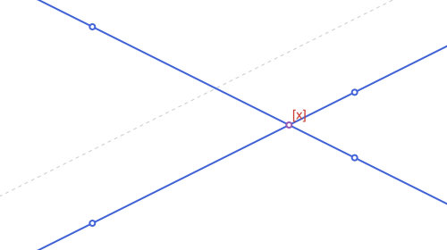
The second is empty because the lines are parallel. See Intersections.
Bisect an angle, or split it in three
O, P1, P2 = APPoint(0.0, 0.0), APPoint(4.0, 0.0), APPoint(0.0, 4.0)
ang = APAngle2(O, P1, P2)
first(angle_bisectors(ang)), length(angle_trisectors(ang))(APAngle2(vertex=[0.0, 0.0], a=[4.0, 0.0], b=[2.8284271247461903, 2.82842712474619]), 3)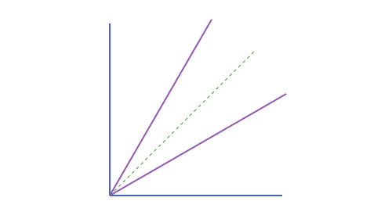
Working with circles
The circle through three points
c = APCircle2(APPoint(0.0, 0.0), APPoint(6.0, 0.0), APPoint(1.5, 4.0))
c.center, c.r([3.0, 1.15625], 3.2151071618998954)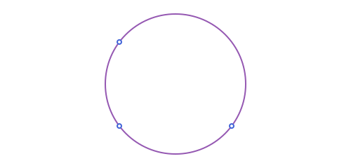
A circle from its diameter, or from a center and a point on it
A, B = APPoint(0.0, 0.0), APPoint(6.0, 0.0)
by_diameter = circle_with_diameter(A, B) # or circle_with_diameter(APSegment(A, B))
by_point = APCircle2(A, APPoint(3.0, 4.0)) # center A, through the second point
by_diameter.r, by_point.r(3.0, 5.0)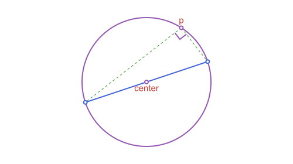
The tangent lines from a point to a circle
c = APCircle2(APPoint(0.0, 0.0), 3.0)
p = APPoint(7.0, 0.0)
tangent_points(c, p), tangent_length(c, p)(APPoint{2, Float64}[[1.2857142857142856, 2.710523708715754], [1.2857142857142856, -2.710523708715754]], 6.324555320336759)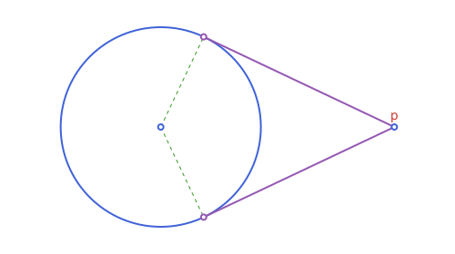
The common tangents of two circles
c1, c2 = APCircle2(APPoint(0.0, 0.0), 3.0), APCircle2(APPoint(10.0, 0.0), 1.5)
length(external_tangent_lines(c1, c2)), length(internal_tangent_lines(c1, c2))(2, 2)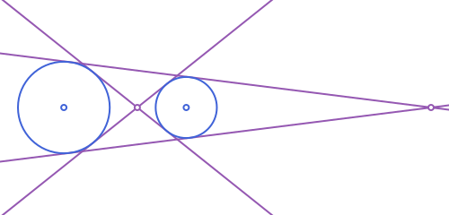
The radical axis of two circles
c1, c2 = APCircle2(APPoint(0.0, 0.0), 3.0), APCircle2(APPoint(4.0, 0.0), 2.0)
radical_axis(c1, c2)APLine([2.625, 0.0] -> [2.625, 4.0])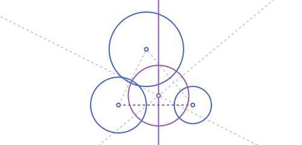
The line through the two points where the circles cross, when they do.
A circle orthogonal to another, with a given center
c = APCircle2(APPoint(0.0, 0.0), 3.0)
o = orthogonal_circle(c, APPoint(7.0, 0.0))
o.center, intersection_angle(c, o) ≈ pi / 2([7.0, 0.0], true)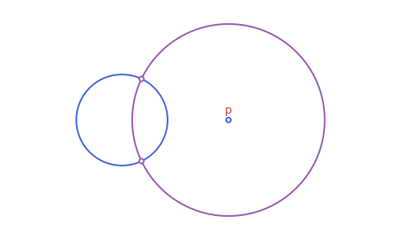
The power of a point
power_of_point(APPoint(7.0, 0.0), APCircle2(APPoint(0.0, 0.0), 3.0))40.0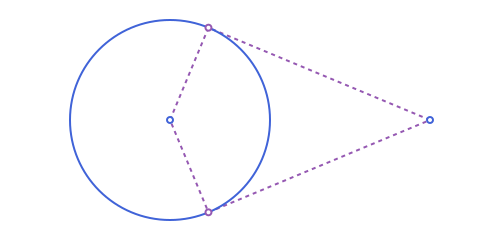
Negative inside the circle, zero on it, and the square of the tangent length outside.
Invert a circle or a line
c = APCircle2(APPoint(3.0, 0.0), 1.0)
invert(c, APPoint(0.0, 0.0); k=2.0)APCircle2([1.5, 0.0], 0.5)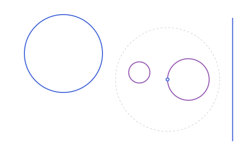
See Circles for inverting lines, segments and polygons too.
Working with tangent circles
The circle through two points tangent to a line
A, B = APPoint(0.0, 0.0), APPoint(4.0, 1.0)
l = APLine(APPoint(-3.0, 3.0), APPoint(8.0, 3.0))
sols = tangent_circles_through_points(A, B, l)
length(sols), all(c -> line_circle_position(l, c) == :tangent, sols)(2, true)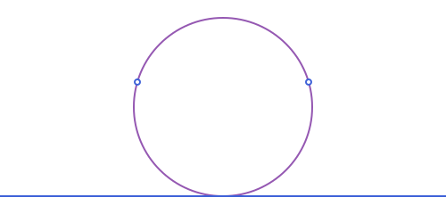
The circle through a point tangent to two lines
l1, l2 = APLine(APPoint(0.0, 0.0), APPoint(1.0, 0.0)), APLine(APPoint(0.0, 0.0), APPoint(0.0, 1.0))
sols = tangent_circles_through_point(l1, l2, APPoint(3.0, 1.0))
length(sols), all(c -> line_circle_position(l1, c) == :tangent, sols)(2, true)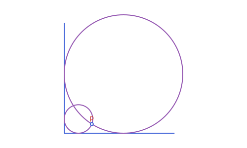
The circles tangent to three circles
c1, c2, c3 = APCircle2(APPoint(0.0, 0.0), 2.0), APCircle2(APPoint(6.0, 0.0), 1.5), APCircle2(APPoint(2.0, 5.0), 1.0)
length(tangent_circles(c1, c2, c3))8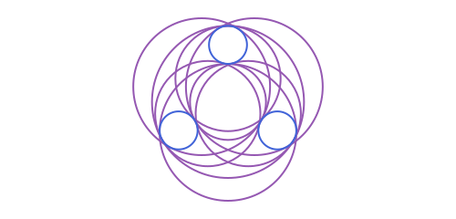
Up to eight solutions. The order is not fixed: choose with nearest_point on the centers. See Tangency & Apollonius Problems.
The circle tangent to two lines with a given radius
l1, l2 = APLine(APPoint(0.0, 0.0), APPoint(1.0, 0.0)), APLine(APPoint(0.0, 0.0), APPoint(0.0, 1.0))
tangent_circles_with_radius(l1, l2, 2.0)4-element Vector{APCircle2{Float64}}:
APCircle2([-2.0, 2.0], 2.0)
APCircle2([2.0, 2.0], 2.0)
APCircle2([-2.0, -2.0], 2.0)
APCircle2([2.0, -2.0], 2.0)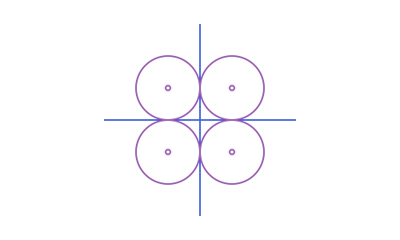
The circle with a given center tangent to a line
l = APLine(APPoint(0.0, 0.0), APPoint(1.0, 0.0))
tangent_circles_with_center(APPoint(2.0, 3.0), l)1-element Vector{APCircle2{Float64}}:
APCircle2([2.0, 3.0], 3.0)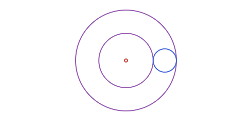
The second point where a line meets a circle
When you already know one of the points, other_intersection gives the other, or nothing if the line is tangent there:
c = APCircle2(APPoint(0.0, 0.0), 5.0)
l = APLine(APPoint(-5.0, 0.0), APPoint(0.0, 3.0))
other_intersection(l, c, APPoint(-5.0, 0.0))[2.3529411764705883, 4.411764705882353]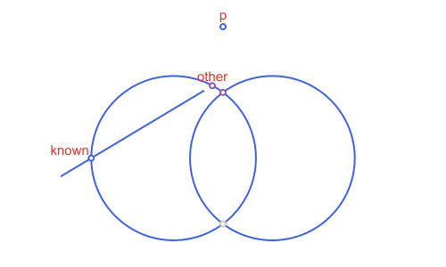
Circles that touch each other in a ring
The three circles centered at the vertices of a triangle that touch pairwise at the points where the incircle touches the sides:
t = APTriangle(APPoint(0.0, 0.0), APPoint(8.0, 0.0), APPoint(3.0, 6.0))
ring = three_tangent_circles(t)
circles_position(ring[1], ring[2]), circles_position(ring[2], ring[3])(:tangent_ext, :tangent_ext)
Working with triangles
Build a triangle from a side and two angles
A, B = APPoint(0.0, 0.0), APPoint(6.0, 0.0)
t = triangle_on_segment(A, B, deg2rad(50), deg2rad(60))
rad2deg(angle_at(t[3], t[1], t[2]))70.00000000000003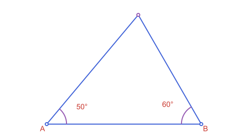
The same idea, with other data: triangle_on_segment_sas (an angle and a side), triangle_on_segment_sss (three sides) and the named ones such as equilateral_triangle_on_segment. See Triangles & Triangle Centers.
An equilateral triangle on a segment, or a square
A, B = APPoint(0.0, 0.0), APPoint(4.0, 0.0)
eq = equilateral_triangle_on_segment(A, B)
distance(eq[3], A) ≈ 4.0, distance(eq[3], B) ≈ 4.0(true, true)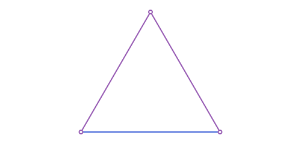
Pass ccw=false for the other side of the segment.
The classical centers, and the Euler line
t = APTriangle(APPoint(0.0, 0.0), APPoint(8.0, 0.0), APPoint(3.0, 6.0))
on_line(centroid(t), euler_line(t)), on_line(orthocenter(t), euler_line(t)), on_line(circumcenter(t), euler_line(t))(true, true, true)
The nine-point circle
t = APTriangle(APPoint(0.0, 0.0), APPoint(8.0, 0.0), APPoint(3.0, 6.0))
npc = nine_point_circle(t)
npc ≈ circumcircle(medial_triangle(t)), npc.r ≈ circumradius(t) / 2(true, true)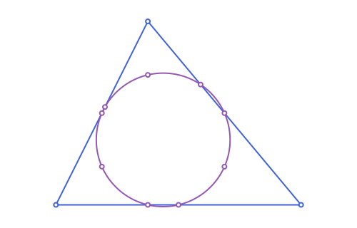
The law of sines
t = APTriangle(APPoint(0.0, 0.0), APPoint(8.0, 0.0), APPoint(3.0, 6.0))
a = distance(t[2], t[3])
a / sin(angle_at(t[1], t[2], t[3])) ≈ 2 * circumradius(t)true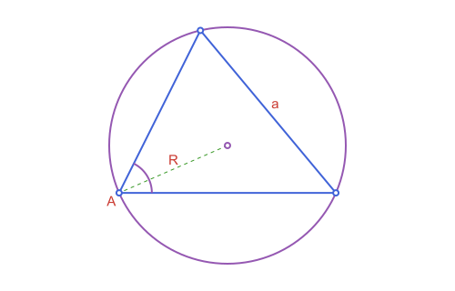
The inscribed square
t = APTriangle(APPoint(0.0, 0.0), APPoint(8.0, 0.0), APPoint(3.0, 6.0))
sq = square_inscribed(t, 3)
area(sq)11.755102040816324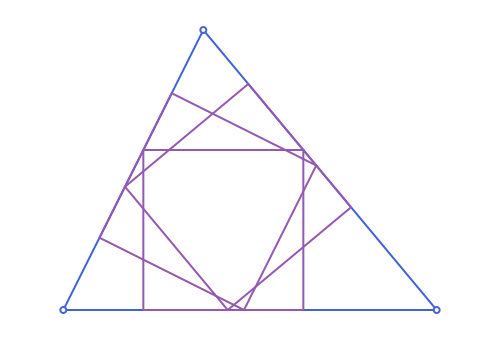
A point in a triangle from barycentric coordinates
t = APTriangle(APPoint(0.0, 0.0), APPoint(8.0, 0.0), APPoint(3.0, 6.0))
barycentric_point(t, 1.0, 1.0, 1.0) ≈ centroid(t)true
Napoleon's theorem
The centers of the equilateral triangles built outward on the sides form an equilateral triangle:
t = APTriangle(APPoint(0.0, 0.0), APPoint(8.0, 0.0), APPoint(3.0, 6.0))
n = napoleon_triangle(t)
distance(n[1], n[2]) ≈ distance(n[2], n[3]) ≈ distance(n[3], n[1])true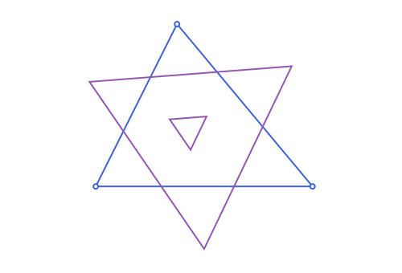
The Simson line of a point on the circumcircle
t = APTriangle(APPoint(0.0, 0.0), APPoint(8.0, 0.0), APPoint(3.0, 6.0))
p = point_on_circle(circumcircle(t), 0.7)
sl = simson_line(t, p)
all(on_line(f, sl) for f in vertices(pedal_triangle(t, p))) # the feet of the perpendicularstrue
Working with polygons
A regular polygon
Give the center and one vertex:
hexagon = regular_polygon(APPoint(0.0, 0.0), APPoint(3.0, 0.0), 6)
pentagon = regular_polygon(APPoint(0.0, 0.0), APPoint(3.0, 0.0), 5)
length(vertices(hexagon)), area(hexagon), perimeter(pentagon)(6, 23.382685902179848, 17.633557568774194)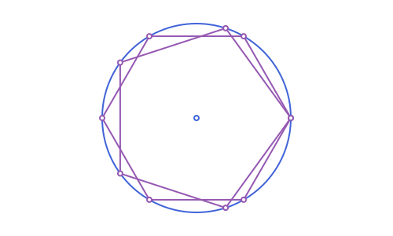
A square or rectangle on a segment
A, B = APPoint(0.0, 0.0), APPoint(4.0, 0.0)
area(square_on_segment(A, B)), area(rectangle_on_segment(A, B, 2.0))(16.0, 8.0)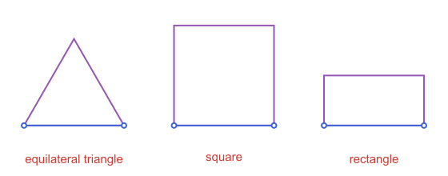
The convex hull of some points
using Random
box = APBoundingBox(APPoint(0.0, 0.0), APPoint(10.0, 6.0))
pts = [rand_inside(Xoshiro(k), box) for k in 1:30]
hull = convex_hull(pts)
length(vertices(hull)), is_convex(hull)(12, true)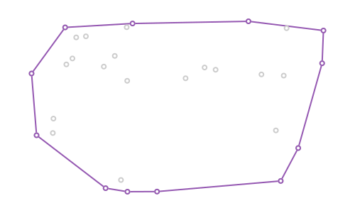
The area, and whether a point is inside
pg = APStraightNgon([APPoint(0.0, 0.0), APPoint(4.0, 0.0), APPoint(4.0, 3.0), APPoint(1.0, 3.0)])
area(pg), APPoint(2.0, 1.0) in pg, APPoint(5.0, 1.0) in pg(10.5, true, false)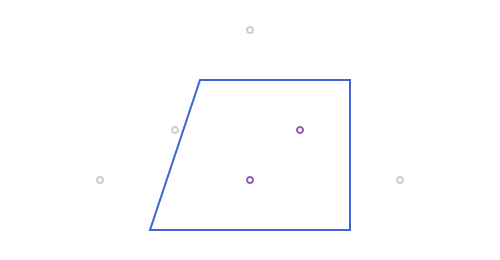
The box around some objects
c = APCircle2(APPoint(0.0, 0.0), 2.0)
box = bbox_union(APBoundingBox(c), APBoundingBox(pg))
bbox_width(box), bbox_height(box)(6.0, 5.0)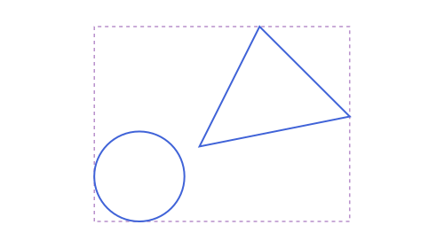
Random points inside a shape
using Random
c = APCircle2(APPoint(0.0, 0.0), 3.0)
pts = [rand_inside(Xoshiro(k), c) for k in 1:5]
all(p -> distance(p, c.center) <= c.r, pts)true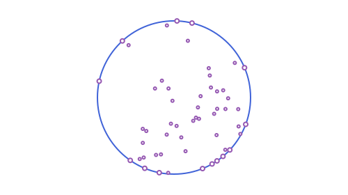
rand(rng, shape) gives points on the boundary instead. See Points, Lines & Rays.
Two classical results
The lune of Hippocrates
The two crescents cut from the semicircles on the legs of a right isosceles triangle have together the area of the triangle:
A, B, C = APPoint(0.0, 0.0), APPoint(2.0, 0.0), APPoint(1.0, 1.0)
half(p, q) = area(circle_with_diameter(p, q)) / 2 # a semicircle on [p, q]
lunes = half(A, C) + half(C, B) - (half(A, B) - area(APTriangle(A, B, C)))
lunes ≈ area(APTriangle(A, B, C))true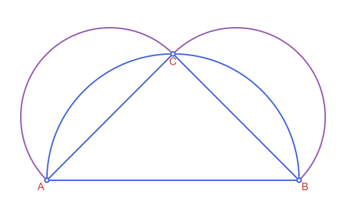
The Apollonius circle of two points
The points whose distances to A and B are in a fixed ratio lie on a circle:
A, B = APPoint(0.0, 0.0), APPoint(6.0, 0.0)
c = apollonius_circle(A, B, 2.0)
p = point_on_circle(c, 1.2)
distance(p, A) / distance(p, B) ≈ 2.0true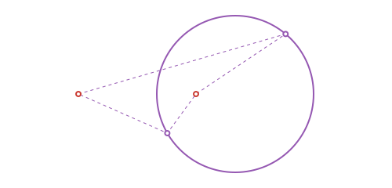
Working with conics
An ellipse from its foci
e = APEllipse2(APPoint(-3.0, 0.0), APPoint(3.0, 0.0), 5.0)
e.a, e.b, foci(e)(5.0, 4.0, ([3.0, 0.0], [-3.0, 0.0]))
The last argument is the semi-major axis a, so the sum of the distances from a point of the ellipse to the two foci is 2a.
The tangent to a conic at a point, and from a point
The polar of a point on a conic is its tangent there, and the tangents from an outside point are two:
e = APEllipse2(APPoint(0.0, 0.0), 5.0, 3.0)
p = point_on_ellipse(e, 1.0)
at_p = polar_line(e, p)
on_line(p, at_p), length(tangent_lines(e, APPoint(8.0, 0.0)))(true, 2)
A parabola from a focus and a directrix
par = APParabola2(APPoint(0.0, 1.0), APLine(APPoint(0.0, -1.0), APPoint(1.0, -1.0)))
p = point_on_parabola(par, 0.7)
distance(p, par.focus) ≈ distance(p, par.directrix)true
The conic through five points
pts = [APPoint(5.0, 0.0), APPoint(0.0, 3.0), APPoint(-5.0, 0.0), APPoint(0.0, -3.0), APPoint(3.0, 2.4)]
conic_through_points(pts...)APEllipse2(center=[-9.992007221626409e-16, 2.7755575615628914e-16], a=5.000000000000001, b=3.0000000000000004, angle=-7.956576387754455e-16)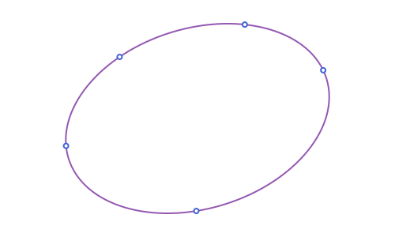
See Conics: Ellipse, Parabola & Hyperbola.
Building shapes from what you have
A line, a ray or a segment from a point and a direction
p = APPoint(1.0, 1.0)
APLine(p, APVector(2.0, 1.0)), APRay(p, pi / 2), APSegment(p, 5.0, pi / 3)(APLine([1.0, 1.0] -> [3.0, 2.0]), APRay([1.0, 1.0] -> [1.0, 2.0]), APSegment([1.0, 1.0] -> [3.5000000000000004, 5.330127018922193]))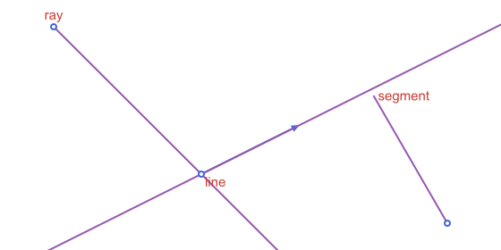
Cut a segment in equal parts, or in a ratio
s = APSegment(APPoint(0.0, 0.0), APPoint(8.0, 0.0))
divide_segment(s, 4), divide_segment(s, 1, 2), point_at_distance(s, 6.5)(APPoint{2, Float64}[[2.0, 0.0], [4.0, 0.0], [6.0, 0.0]], [2.6666666666666665, 0.0], [6.5, 0.0])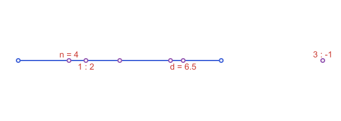
Points spread evenly on a circle, an arc or a segment
equally_spaced_points(APCircle2(APPoint(0.0, 0.0), 2.0), 6)6-element Vector{APPoint{2, Float64}}:
[2.0, 0.0]
[1.0000000000000002, 1.7320508075688772]
[-0.9999999999999996, 1.7320508075688774]
[-2.0, 2.4492935982947064e-16]
[-1.0000000000000009, -1.732050807568877]
[1.0000000000000002, -1.7320508075688772]An angle of a given measure, or between two lines
a60 = angle_with_measure(APPoint(0.0, 0.0), APPoint(4.0, 0.0), pi / 3)
rad2deg(measure(a60)), rad2deg(measure(APAngle2(APLine(APPoint(0.0, 0.0), APPoint(1.0, 0.0)), APLine(APPoint(0.0, 0.0), APPoint(1.0, 1.0)))))(59.99999999999999, 45.0)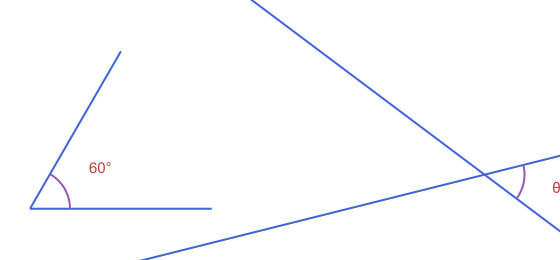
The tangent and the normal at a point of a curve
e = APEllipse2(APPoint(0.0, 0.0), 5.0, 3.0)
pt = point_on_ellipse(e, 1.0)
on_line(pt, tangent_line(e, pt)), is_perpendicular(tangent_line(e, pt), normal_line(e, pt))(true, true)A regular polygon on a side, and a star
a, b = APPoint(0.0, 0.0), APPoint(3.0, 0.0)
area(regular_polygon_on_segment(a, b, 5)), length(vertices(star_polygon(APPoint(0.0, 0.0), APPoint(3.0, 0.0), 5, 2)))(15.484296605300703, 5)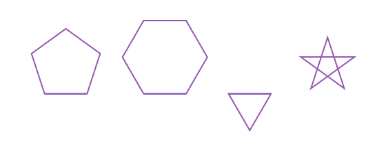
A rhombus, a rectangle, a trapezoid or a kite
a, b = APPoint(0.0, 0.0), APPoint(4.0, 0.0)
area(rhombus_on_segment(a, b, pi / 3)), area(rectangle_from_diagonal(a, APPoint(4.0, 3.0), 0.5)), area(isosceles_trapezoid_on_segment(a, b, 2.0, 2.5)), area(kite_on_diagonal(a, APPoint(0.0, 4.0), 0.6, 1.5))(13.856406460551018, 10.518387310098706, 7.5, 6.0)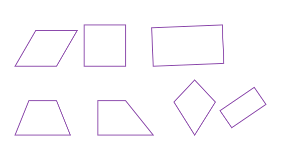
A circle inside or around a quadrilateral
trap = isosceles_trapezoid_on_segment(APPoint(0.0, 0.0), APPoint(6.0, 0.0), 2.0, 3.0)
kite = kite_on_diagonal(APPoint(0.0, 0.0), APPoint(0.0, 7.0), 0.35, 2.0)
circumcircle(trap).r, incircle(kite).r(3.0046260628866577, 1.721417183823353)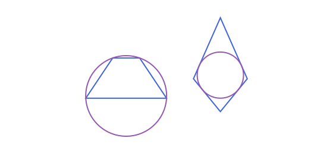
Round the corners of a polygon or a polyline
sq = APStraightNgon([APPoint(0.0, 0.0), APPoint(4.0, 0.0), APPoint(4.0, 4.0), APPoint(0.0, 4.0)])
rounded = round_corners(sq, 1.0)
length(sides(rounded)), area(rounded)(8, 15.141592653589793)
Move a polygon outward or inward, or grow a box
area(offset_polygon(sq, 1.0)), area(offset_polygon(sq, -1.0)), inflate(APBoundingBox(APPoint(0.0, 0.0), 4.0, 2.0), 1.0)(36.0, 4.0, APBoundingBox([-3.0, -2.0] .. [3.0, 2.0]))
An arc through three points, or with a given radius
arc_through_points(APPoint(0.0, 0.0), APPoint(2.0, 1.5), APPoint(4.0, 0.0)), arc_with_radius(APPoint(7.0, 0.0), APPoint(10.0, 0.0), 2.0)(APCircularArc2(APCircle2([2.0, -0.5833333333333334], 2.0833333333333335), [4.0, 0.0] -> [0.0, 0.0]), APCircularArc2(APCircle2([8.5, 1.3228756555322954], 2.0), [7.0, 0.0] -> [10.0, 0.0]))
A circle tangent to a line at a given point
l = APLine(APPoint(-3.0, 0.0), APPoint(9.0, 0.0))
tangent_circle_at_point(l, APPoint(2.0, 0.0), APPoint(0.0, 2.0)), length(tangent_circles_at_point(l, APPoint(2.0, 0.0), 1.2))(APCircle2([2.0, 2.0], 2.0), 2)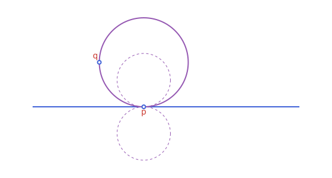
A triangle around a circle
c = APCircle2(APPoint(0.0, 0.0), 1.0)
t = circumscribed_triangle(c, point_on_circle(c, 0.5), point_on_circle(c, 2.5), point_on_circle(c, 4.5))
isapprox(incircle(t), c; atol=1e-9)true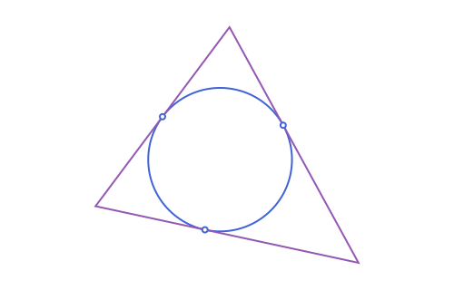
A conic from a focus and a directrix
F, d = APPoint(0.0, 0.0), APLine(APPoint(4.0, -1.0), APPoint(4.0, 1.0))
typeof(conic_with_focus(F, d, 0.5)), typeof(conic_with_focus(F, d, 1.0)), typeof(conic_with_focus(F, d, 2.0))(APEllipse2{Float64}, APParabola2{Float64}, APHyperbola2{Float64})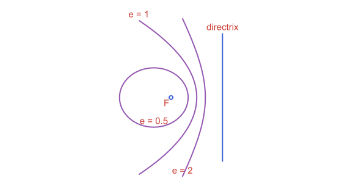
An ellipse from a center, a vertex and a point
el = ellipse_with_axis(APPoint(0.0, 0.0), APPoint(5.0, 0.0), APPoint(3.0, 2.4))
el.a, el.b(5.0, 2.9999999999999996)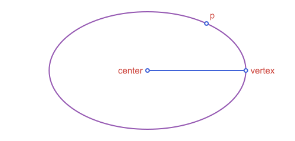
A hyperbola from its asymptotes
hy = hyperbola_with_asymptotes(APLine(APPoint(0.0, 0.0), APPoint(1.0, 1.0)), APLine(APPoint(0.0, 0.0), APPoint(1.0, -1.0)), APPoint(2.0, 0.0))
hy.a, hy.b(2.0, 2.0000000000000004)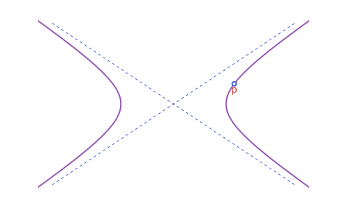
A parabola through three points
pa = parabola_through_points(APPoint(-2.0, 4.0), APPoint(0.0, 0.0), APPoint(1.0, 1.0), APVector(0.0, 1.0))
pa.focus[0.0, 0.25]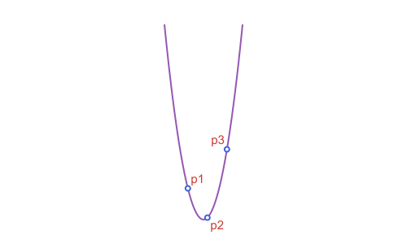
A similarity from two points and their images
m = similarity_map(APPoint(0.0, 0.0) => APPoint(1.0, 1.0), APPoint(1.0, 0.0) => APPoint(1.0, 2.0))
m(APPoint(0.0, 1.0)), scaling_map(2.0, 0.5)(APPoint(1.0, 1.0)), shear_map(1.0)(APPoint(0.0, 2.0))([0.0, 1.0], [2.0, 0.5], [2.0, 2.0])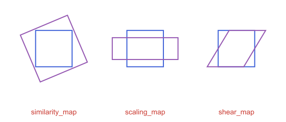
Moving things
Rotate, scale or reflect a whole shape
t = APTriangle(APPoint(0.0, 0.0), APPoint(3.0, 0.0), APPoint(0.0, 4.0))
O = APPoint(0.0, 0.0)
isapprox(rotate(t, pi / 2), APTriangle(O, APPoint(0.0, 3.0), APPoint(-4.0, 0.0)); atol=1e-9), area(homothety(t, 2.0)) ≈ 4 * area(t), reflection(t, APLine(O, APPoint(0.0, 1.0))) ≈ APTriangle(O, APPoint(-3.0, 0.0), APPoint(0.0, 4.0))(true, true, true)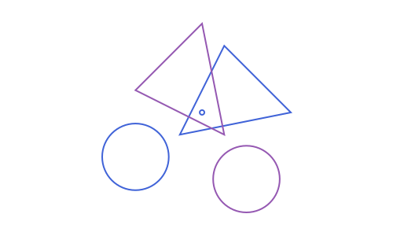
Every type accepts these. rotate and homothety turn and scale about the origin unless you give a center as the last argument, as in rotate(t, pi / 2, c). See Affine Maps.
Apply several steps as one
m = rotation_map(pi / 2, APPoint(0.0, 0.0)) ∘ translation_map(APVector(3.0, 0.0))
isapprox(m(APPoint(0.0, 0.0)), APPoint(0.0, 3.0); atol=1e-9)true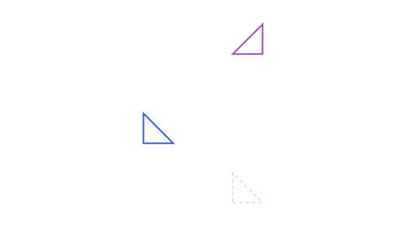
A map from three points and their images
m = affine_map(APPoint(0.0, 0.0) => APPoint(1.0, 1.0), APPoint(1.0, 0.0) => APPoint(3.0, 1.0), APPoint(0.0, 1.0) => APPoint(1.0, 4.0))
m(APPoint(1.0, 1.0))[3.0, 4.0]Transform several objects with one macro
c = APCircle2(APPoint(1.0, 2.0), 3.0)
s = APSegment(APPoint(0.0, 0.0), APPoint(4.0, 0.0))
C2, S2 = @rotate (pi / 2) begin
c
s
end
C2.r, C2.center ≈ APPoint(-2.0, 1.0)(3.0, true)See Transforming in Bulk: Macros.
Checking recipes
Are these points on a circle? On a line?
a, b, c = APPoint(0.0, 0.0), APPoint(6.0, 0.0), APPoint(5.0, 4.0)
d = point_on_circle(circumcircle(APTriangle(a, b, c)), 2.0)
is_concyclic(a, b, c, d), is_collinear(a, b, c)(true, false)
Which side of a line, and is a point in a region?
l = APLine(APPoint(0.0, 0.0), APPoint(4.0, 2.0))
side_of_line(APPoint(1.0, 3.0), l), APPoint(1.0, 1.0) in APHalfPlane2(l, APPoint(1.0, 3.0))(1, true)
See Predicates.
Drawing recipes
Fit a construction to a canvas
using Apollonius, Luxor
t = APTriangle(APPoint(0.0, 0.0), APPoint(6.0, 0.0), APPoint(1.5, 4.0))
cc = circumcircle(t)
lxm, lxo = @to_luxor_picture width=500 margin=30 begin
t
cc
end
lxm holds the canvas size, and lxo the objects in canvas coordinates, under the names they had in the block. Every name in the block must be an object with a size. See Workflow: From Construction to Figure.
Put a label outside a vertex
A2, B2, C2 = vertices(lxo.t)
G = centroid(lxo.t)
for (v, name) in zip((A2, B2, C2), ("A", "B", "C"))
label(name, label_anchor(v, G)...)
end
Mark equal sides and a right angle
On the fitted vertices A2, B2 and C2 of the previous recipe:
path(marks(APSegment(A2, B2); count=2); action=:stroke) # two ticks
path(APAngle2(A2, B2, C2); as=:rarc, radius=12, action=:stroke) # the right-angle square
Marks, braces, arrowheads and their styles are in Marks, Labels & Decorations.
Draw a curve that goes on forever
Infinite lines and conics have no size, so name them with @unbounded inside the fitting block and draw them with extend:
lxm, lxo = @to_luxor_picture width=500 begin
t
@unbounded l = APLine(t[1], t[2])
end
path(lxo.l, action=:stroke, extend=500)